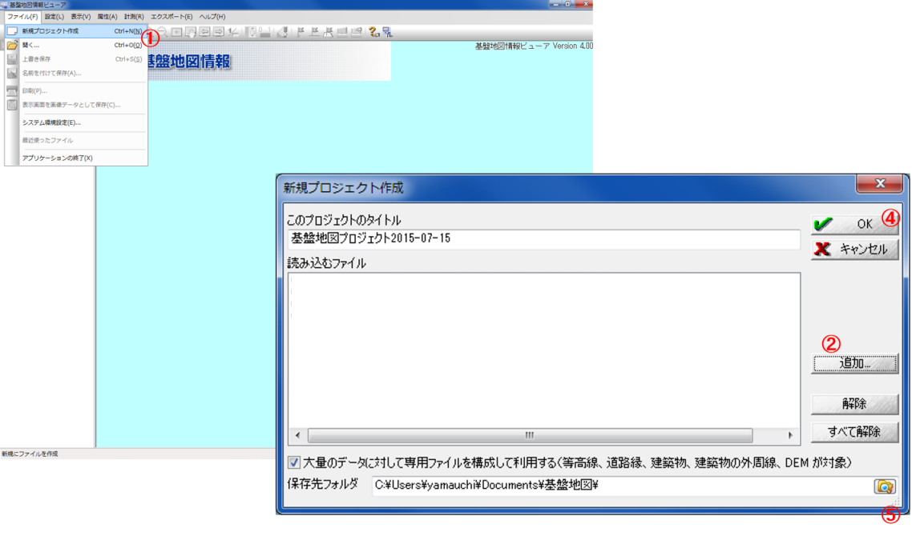
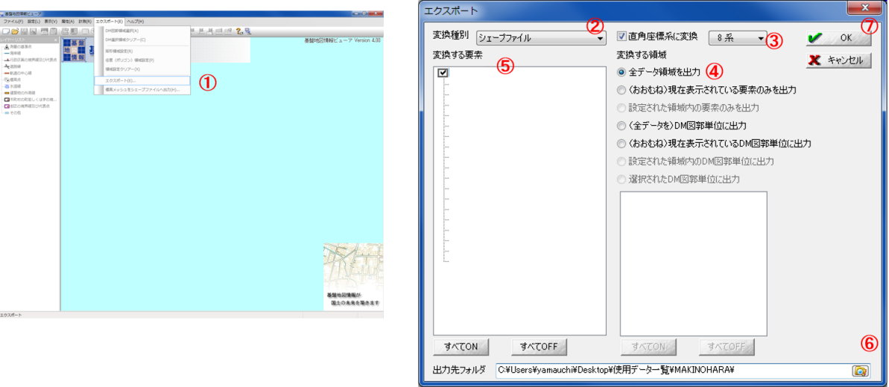
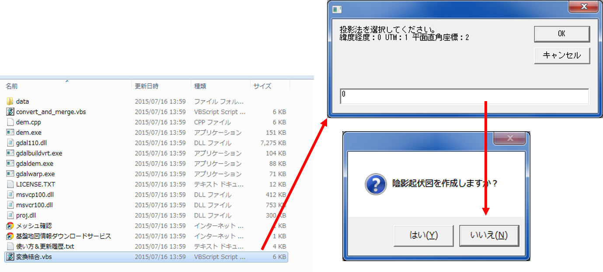

既存データの地図データと属性データ
本教材は、「既存データの地図データと属性データの実習用教材」です。GISで利用できる地図データや属性データのダウンロード手法について解説しています。データのダウンロードには、WEBブラウザを用いています。余裕があれば、QGISでダウンロードしたデータの表示を試してください。この教材では 、ダウンロードしたデータの活用法についての解説はしていません。講義用教材として、地理情報科学教育用スライド（GIScスライド）の2章が参考になります。
課題形式で使用する場合は、本教材を一読した後、課題ページへお進みください。GIS初学者は、本教材を進める前にGISの基本概念の教材を確認しておいてください。本教材を使用する際は、利用規約をご確認いただき、これらの条件に同意された場合にのみご利用下さい。
※本教材は、2018年1月現在（一部、2015年8月現在）の情報で作成しています。そのため、ダウンロードサイトの仕様等に変更がある場合がある可能性があります。
Menu
国・地方自治体のGISデータのダウンロード
スライド教材
本教材は、スライド形式(スライド_既存データの地図データと属性データ)としても、ご利用いただけます。
国土交通省のGISデータ基盤地図情報(国土地理院)
基盤地図情報は、国土交通省国土地理院が整備しているデータです。市町村や2次メッシュ単位で、測量の基準点のほか、行政区画の境界（2500レベル以上）や道路縁（2500レベル以上）等がダウンロードできます。また、地形表現や解析等で用いることのできるDEM（Digital Elevation Model）もダウンロードすることができます。基盤地図情報として提供されているデータは、ダウンロード後に変換が必要です。以下では、基盤地図情報からデータをダウンロードする手法について解説しています。教材に従って任意のファイルを選択し、ダウンロードを試してください。
※基盤地図情報の利用については、測量法に従ってください。
アカウントの作成
基盤地図情報ダウンロードサービスアクセスし、ログインから、アカウントの新規登録を行う。
基盤地図情報基本項目：ベクタデータの取得
ログインした状態で、基盤地図情報ダウンロードサービスから基盤地図情報 基本項目のファイル選択へをクリックする。
地図をスクロールし、ダウンロードするデータを選択する（ここでは、例として東京大学本郷キャンパスが含まれる533946を選択し、ダウンロードファイル確認へをクリックする。
データが選択できたら、まとめてダウンロードをクリックする。ダウンロード後、Zipファイルを解凍する。
基盤地図情報ビューアをダウンロードとデータ変換
以下では、ダウンロードした基盤地図情報をQGISで使用できるシェープファイルに変換する手法について解説しています。
基盤地図情報のサイト から、データをシェープファイルに変換するための基盤地図情報ビューアをダウンロードする。
ダウンロードしたZipファイルを解凍し、FGDV.exeを開くと、ビューア（FGDV）が立ち上がる。
FGDVを利用し、QGISで利用できるようにデータを変換する。 
- ファイルを開き、新規プロジェクト作成をクリックする。
- 追加からダウンロードしたファイルを選択。
- 保存先フォルダを作成し、指定する。
- OKをクリックする。
しばらくするとデータが表示されるが、読み込むデータの量によってフリーズする（PCの動作が停止する）ことがある。
各値を設定し、シェープファイルの出力を行う。 
- エクスポートをクリックする。
- シェープファイルを選択する。
9系を選択する（データによって変わるため、平面直角座標系の対応表注意する）。- 全データ領域を出力にチェックする。
- 全てにチェックをつける。
- 出力先のフォルダを指定する。
- OKをクリックする。
※ 変換が終わるまで時間がかかる。また、途中でフリーズする可能性があるため、広範囲、高密度のデータを変換する場合は、データを分けて変換することが望ましい。
基盤地図情報数値標高モデル(DEM)：ラスタデータの取得
ログインした状態で、基盤地図情報ダウンロードサービスから基盤地図情報 数値標高モデルのファイル選択へをクリックする。
地図をスクロールし、ダウンロードするデータを選択する（ここでは、例として東京大学本郷キャンパスが含まれる533946を選択し、ダウンロードファイル確認へをクリックする。
データが選択できたら、まとめてダウンロードをクリックする。ダウンロード後、Zipファイルを解凍する。
基盤地図情報からダウンロードしたDEMを変換する
基盤地図情報からダウンロードした数値標高モデルをGISソフトウェアで処理するためには、ラスタデータへの変換が必要です。以下では、株式会社エコリスのＨＰのコンバーターを用いた変換について解説しています。株式会社エコリスのＨＰから、標高DEMデータ変換ツールをダウンロードし、DEMtool.zipを解凍する。解凍したファイルを開き、変換結合.vbsを実行する。
投影法を選択し、緯度経度を選択する（今回は例として0とする）。陰影図の作成が必要な場合は、「はい」をクリックする（今回はいいえとした）。 
基盤地図情報からダウンロードしたDEMが入っているフォルダを選択し、海域の標高値を選択する（今回は「はい → 0」を選択した）。変換作業を開始し、完了のメッセージを待つ。変換先のフォルダー内に、geotifが出力されているかを確認する。

ファイルの変換が終了すると、ファイル内にmerge.tifが出力されるため、これをQGISで読み込み、データを確認する（標高に応じて白と黒の濃淡が表現されていることを確認する）。ラスタデータの配色（値に応じた色分け）は、空間データの統合・修正の教材で解説している。
地理院地図
国土地理院が提供するデジタル地図として、地理院地図があります。地理院地図では、2万5千分の1地形図や空中写真等を電子化した電子国土基本図のほか、土地条件図などの主題図を閲覧することができます。地理院地図は、オープンソースとして提供されています。タイルで配信されているデータは、WEB地図やGISソフトウェアで背景地図として利用することができます。
国土交通省のGISデータ国土数値情報
国土数値情報は、国土交通省が整備しているGISデータで、国土計画の策定や推進のために提供されているものです。ほとんどのデータが、シェープファイルで提供されています。以下では、国土数値情報のサイトから、データをダウンロードする手法について解説をしています。教材に従って任意のファイル（3.地域 学校など）を選択し、ダウンロードを試してください。
国土数値情報のサイトにアクセスする。JPGIS形式もしくは、旧統一フォーマットを選択し、任意の項目にチェックをいれて下段の
選択をクリックする。データの範囲を決めるため、任意の地域にチェックをいれ選択をクリックする。今回は最新版の世界測地系のデータをダウンロードすることとし、該当する項目にチェックをいれ、
選択をクリックする。アンケートに回答し、利用約款を読み
はいをクリックする。ダウンロードをクリックすると、データが保存できる。QGISなどでデータを読み込む場合は、ダウンロード後に.Zip形式のファイルを解凍する必要がある。
環境省のGISデータ
以下では、環境省が公開している生物多様性サイトのGISデータのダウンロード手法について解説しています。このサイトでは、植生等に関するGISデータが提供されています。教材に従って任意のファイルを選択し、ダウンロードを試してください。
生物多様性のサイトにアクセスし、自然環境調査Web-GISをクリックする。Web地図の下のメニューからGISデータ（Shape）をダウンロードをする。
取得したいデータを選択し、ダウンロード画面へ進む。例）植生調査（1/25,000縮尺）を選択した場合は、
都道府県別一覧へをクリックし、必要なデータをダウンロードする。
総務省のGISデータ
以下では、総務省が公開しているGISデータのダウンロード手法について解説しています。e-Statでは、国勢調査、経済センサス、事務所・企業統計調査、農林業センサスなどがダウンロードできます。GISで扱えるデータとして、市区町村境界のデータも提供されています。教材に従って任意のファイルを選択し、ダウンロードを試してください。
- e-Statのサイトにアクセスする。
統計GIS＞地図で見る統計に進む。このページでは、Web地図での統計情報の閲覧、統計データのダウンロード、境界データのダウンロードができる。以下では、境界データ（市区町村ごと）のダウンロード手法を解説する。 境界データのダウンロードをクリックし、小地域を選択する。- 国勢調査を選択し、 調査の年代と地域を選択する（今回は、2015年、小地域を選択する）。
- ダウンロードするデータのタイプを選択する（今回は、世界測地系緯度経度・Shape形式とする）。
- ダウンロードするデータの都道府県を選択した後、市町村をクリックする（データ形式からデータがダウンロードできる）。
※ 境界データをダウンロードする際は、データの違い（空間座標系の違い等）に注意する。
※ 統計データは、境界データとテーブル結合をすることで、地図化できる。テーブル結合の手法については、よくある質問とエラーのテーブル結合の項目を参照してください。
その他のGISデータ
属性データを地図化するためのデータ
属性データを地図化するためのデータとして、Municipality mapのサイトを利用する手法について解説しています。教材に従って任意のファイルを選択し、ダウンロードを試してください。
Municipality mapのサイトにアクセスし、ページを開く。このサイトでは、市区町村区域のGISデータをダウンロードすることができる。ダウンロードしたい年月を選択し、区域データを生成するをクリックする。

地方自治体のGISデータ
地方自治体は様々なデータをWeb GISで公開していています。ダウンロードできるものと、閲覧のみのものがあります。以下では、その例をいくつか紹介しています。
(例)
オープンデータ
オープンデータとは、「機械判読に適したデータ形式で、二次利用が可能な利用ルールで公開されたデータ」であり「人手を多くかけずにデータの二次利用を可能とするもの」のことを言います(総務省オープンデータ戦略の推進より引用）。以下では、オープンデータのダウンロード手法について解説しています。教材に従って任意のファイルを選択し、ダウンロードを試してください。
- オープンデータとGIS
- 自治体が、様々な情報をCSV、Shapeデータで配信している。
- オープンデータを利用した地図アプリなども普及している。
オープンデータの公開例
公開されているオープンデータの例
この教材の[課題ページ_既存の地図]へ進む
ライセンスに関する注意事項
本教材で利用しているキャプチャ画像の出典やクレジットについては、その他のライセンスについてよりご確認ください。
教材の利用に関するアンケート
本プロジェクトでは、教材の改良を目的とした任意アンケートを実施しています。ご協力いただける方は、アンケートにお進みください。ご協力のほどよろしくお願いいたします。※ 本アンケートの成果は、教材の改良のほか、学会での発表等の研究目的でも利用します。また、本アンケートでは、個人が特定できるような質問は設けておりません。